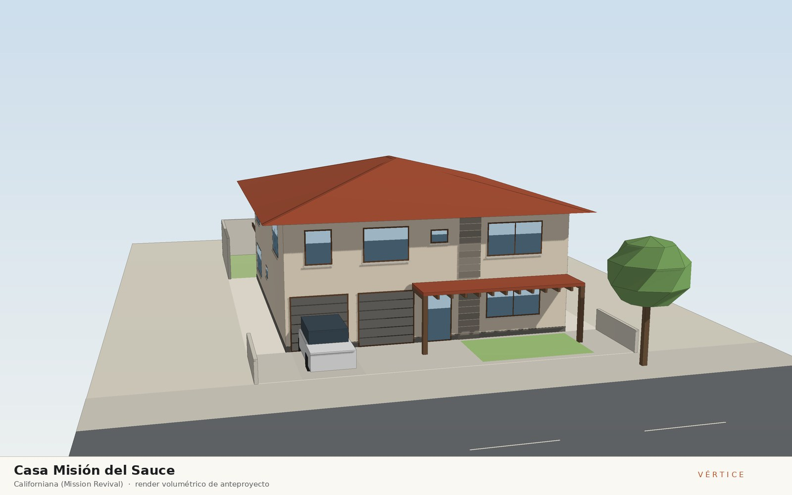
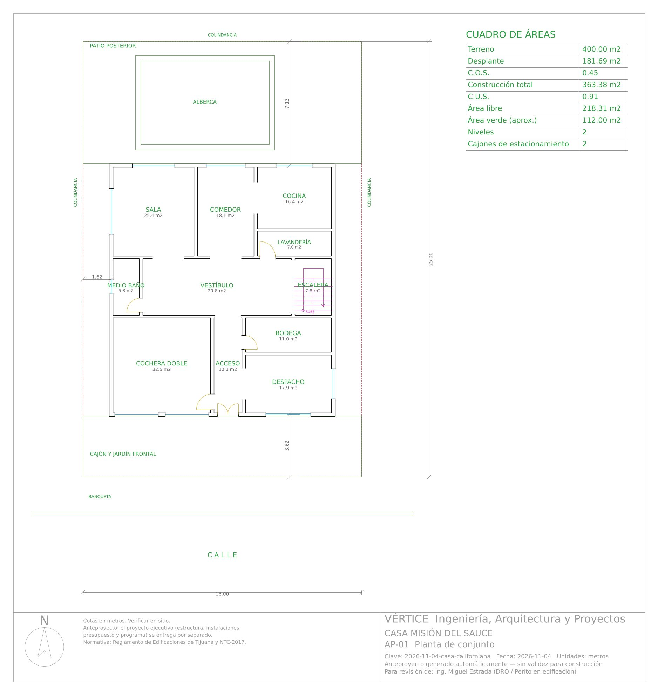
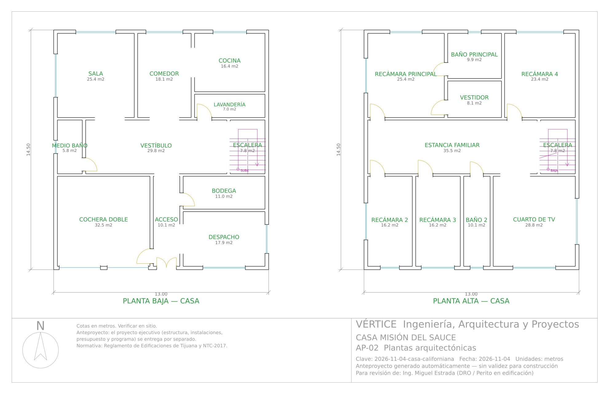
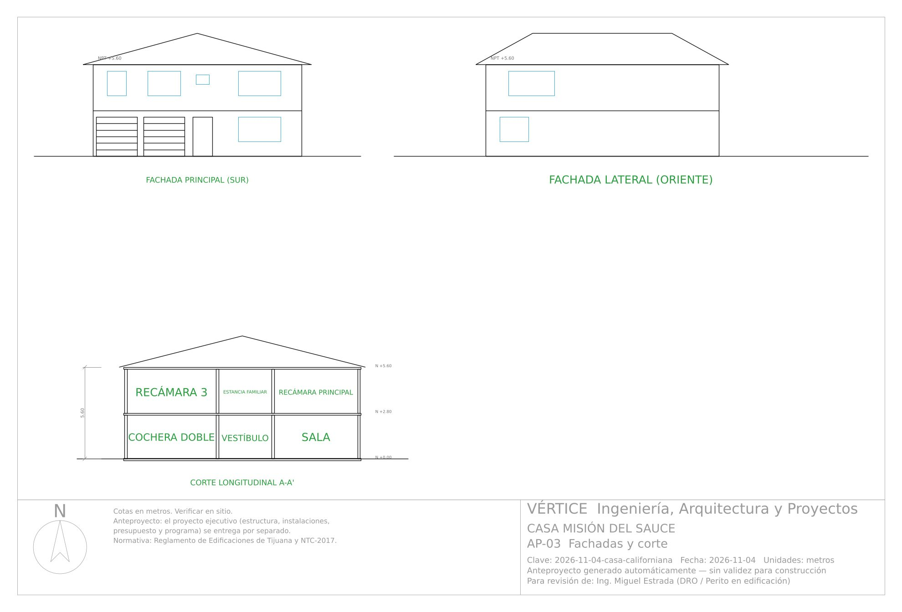

4 de noviembre de 2026 · Casa habitación
Casa Misión del Sauce
Corriente: Californiana (Mission Revival)

Concepto
Vivienda de dos niveles en un lote de 16 x 25 m en Tijuana que retoma la tradición Mission Revival de la costa californiana, la arquitectura que nació a este lado de la frontera con las misiones de Baja California. Un porche profundo con vigas de madera aparentes recibe al visitante y da sombra a la fachada sur, mientras la cubierta a cuatro aguas de teja tipo misión con alero amplio protege los muros de aplanado arena del sol del poniente y desaloja con rapidez las lluvias de invierno. Al fondo, una pérgola de madera prolonga la estancia hacia el jardín norte, donde llega luz difusa y la brisa marina del poniente cruza la casa de lado a lado. Un paño de cantera rosa en el muro ciego más ancho ancla el volumen al terreno y marca el acceso, como los muros de piedra de las misiones.
Dictamen del arquitecto
- Terreno de 16.00 x 25.00 m (400 m²); casa de 12.75 x 14.25 m a ejes, 363.4 m² construidos en 2 niveles con desplante de 181.7 m². COS 0.45 y CUS 0.91 (por verificar con el PDU de Tijuana en el trámite); 1.50 m libres a cada colindancia, cochera doble techada de 5.80 x 5.60 m y patio posterior con alberca.
- Recorrido: acceso con puerta doble de 1.20 m bajo el porche → vestíbulo → sala, comedor y cocina comunicada al comedor, todas al jardín norte; medio baño y lavandería desde el vestíbulo, bodega y despacho desde el acceso. Escalera al oriente (peralte 17.5 cm, huella 29 cm, 2p+h = 64 cm, tramo de 1.15 m) abierta al vestíbulo y a la estancia familiar, que reparte a las 4 recámaras, el baño 2 y el cuarto de TV; baño principal y vestidor sólo desde la recámara principal.
- Recámaras con lado ≥ 2.90 m (2 y 3 de 2.90 x 5.60 m, principal 4.84 x 5.25 m, 4 de 4.46 x 5.25 m), todas con ventana al exterior; altura libre de 2.67 m en planta baja y 2.66 m en planta alta. Por coordinación con estructura los vanos abiertos entre locales se limitaron a 1.80 m.
- Lenguaje Mission Revival: cubierta a cuatro aguas de teja tipo misión con alero de 0.90 m y pendiente de 30 %, porche de madera de 1.80 m de fondo sobre el acceso y el despacho (sombra al sur), pérgola posterior hacia el jardín y paño corrido de cantera rosa en el macizo central de la fachada principal. A-04, A-05, AP-03 y los renders muestran la misma geometría.
- Correcciones en revisión: la planta de azotea dibujaba losa plana con pretil y el tanque de gas sobre ella, el porche sólo se dibujaba como pérgola posterior, la cantera no coincidía entre render y fachada y el clóset de la recámara 4 chocaba con el abatimiento de la puerta. Se corrigió el motor (ver notas del commit) y se regeneró.
Dictamen de ingeniería
- Veredicto: construible conforme a norma — 0 errores y 0 avisos en 28 verificaciones de coordinación —, sujeto a los supuestos por validar indicados abajo.
- Mampostería confinada con block de 15 cm en X y de 20 cm en Y (cambiado por carga vertical); 2 muros de planta alta sin muro de carga debajo se especifican como divisorios ligeros de tablaroca. Método simplificado NTC: X VR 79.6 t ≥ Vu 77.6 t (margen de 2.6 %, dirección crítica); Y VR 127.2 t ≥ 77.6 t; V basal 70.5 t con c/Q'R = 0.213 supuesto y T = 0.18 s.
- Losa de entrepiso de 13 cm (#3 @ 10–20 cm) y de azotea de 14 cm (#3 @ 10–15 cm); la azotea lleva CM = 468 kg/m² que ya incluye 100 kg/m² de la cubierta de teja sobre armadura ligera de PTR (sin relleno ni entortado, que no se requieren bajo la cubierta inclinada). Trabe de carga T-1 de 30x50 cm (L = 5.60 m, 5 #6) a media cochera y 16 trabes en total; escalera de losa.
- Zapatas corridas ZC-1 de 50 x 20 cm (perimetral, q = 5.42 t/m²) y ZC-2 de 75 x 20 cm (interior, q = 10.45 t/m²) contra una q adm supuesta de 12 t/m² a -0.80 m: requiere estudio de mecánica de suelos y confirmar el espectro sísmico del sitio. Cuantificación: 7,946 kg de acero y 91.9 m³ de concreto (21.9 kg/m²).
- Instalaciones: toma Ø13 mm, 22 UM (1.21 L/s), cisterna de 2 m³ con hidroneumático; colector Ø100 mm al 2 % a la red CESPT; gasto pluvial de 5.0 L/s captado por canalón perimetral a 2 bajadas Ø100 mm; 18 circuitos (16.5 kW instalados, 11.6 kW de demanda, 58.3 A), interruptor general 2P-100 A, desbalance 0.6 %; gas LP con tanque estacionario de 500 L a nivel del patio posterior, a 3.6 m de la fachada norte y lejos de la alberca (no sobre la cubierta de teja). Factibilidades de CESPT y CFE por tramitar.
- Presupuesto de $2,072,144 + IVA ($5,702/m²) y programa de 25 semanas; la cubierta de teja, el canalón, el porche y la pérgola quedan en la hoja "Por cotizar" (46 partidas) hasta tener cotización de proveedores de Tijuana.
Materiales
Muros de block de concreto con aplanado texturizado color arena; cubierta a cuatro aguas de teja de barro tipo misión sobre losa de concreto impermeabilizada; porche y pérgola de vigas de madera termotratada con acabado nogal; paño de cantera rosa de la región en el muro de acceso y en marcos de ventanas; pisos de barro tipo saltillo sellado en planta baja y duela de ingeniería en recámaras; cancelería de aluminio color bronce con vidrio claro de 6 mm; herrería forjada en barandales
Vistas

Anteproyecto — descargas
Láminas del anteproyecto






Proyecto ejecutivo
Proyecto ejecutivo completo — 17 láminas. Se entrega por separado; no se publica en esta galería.
Revisión de coordinación arquitectura–estructura–instalaciones–acabados y normativa: Sin errores · 0 avisos en 28 verificaciones.
Arquitectónico
- A-01 Planta de conjunto
- A-02 Plantas arquitectónicas amuebladas
- A-03 Plantas acotadas a ejes
- A-04 Planta de azotea
- A-05 Fachadas
- A-06 Cortes arquitectónicos
- A-07 Cancelería y acabados
Estructural
- E-01 Planta de cimentación
- E-02 Losas, trabes y castillos
- E-03 Detalles estructurales
- E-04 Cuantificación de acero y concreto
Instalaciones
- IH-01 Instalación hidráulica
- IS-01 Instalación sanitaria y pluvial
- IE-01 Instalación eléctrica
- IG-01 Instalación de gas LP
- IH-02 Isométrico hidráulico
- IE-02 Cuadro de cargas y diagrama unifilar
Incluye: Memoria técnica (Word/PDF) · Presupuesto (Excel) · Programa de obra (Excel y Gantt) · Juego de planos (PDF y DXF)
Revisión de calidad
Sin errores · 0 avisos
Cuadro de áreas
Ver los 21 espacios
| Bloque | Nivel | Espacio | Medidas (m) | Área (m²) |
|---|---|---|---|---|
| Casa | Planta baja | Cochera doble | 5.80 x 5.60 | 32.48 |
| Casa | Planta baja | Acceso | 1.80 x 5.60 | 10.08 |
| Casa | Planta baja | Despacho | 5.15 x 3.47 | 17.88 |
| Casa | Planta baja | Bodega | 5.15 x 2.13 | 10.96 |
| Casa | Planta baja | Medio baño | 1.70 x 3.40 | 5.78 |
| Casa | Planta baja | Vestíbulo | 8.75 x 3.40 | 29.75 |
| Casa | Planta baja | Escalera | 2.30 x 3.40 | 7.82 |
| Casa | Planta baja | Sala | 4.84 x 5.25 | 25.44 |
| Casa | Planta baja | Comedor | 3.44 x 5.25 | 18.08 |
| Casa | Planta baja | Lavandería | 4.46 x 1.57 | 7.03 |
| Casa | Planta baja | Cocina | 4.46 x 3.67 | 16.40 |
| Casa | Planta alta | Recámara 2 | 2.90 x 5.60 | 16.24 |
| Casa | Planta alta | Recámara 3 | 2.90 x 5.60 | 16.24 |
| Casa | Planta alta | Baño 2 | 1.80 x 5.60 | 10.08 |
| Casa | Planta alta | Cuarto de TV | 5.15 x 5.60 | 28.84 |
| Casa | Planta alta | Estancia familiar | 10.45 x 3.40 | 35.53 |
| Casa | Planta alta | Escalera | 2.30 x 3.40 | 7.82 |
| Casa | Planta alta | Recámara principal | 4.84 x 5.25 | 25.44 |
| Casa | Planta alta | Vestidor | 3.44 x 2.36 | 8.14 |
| Casa | Planta alta | Baño principal | 3.44 x 2.89 | 9.94 |
| Casa | Planta alta | Recámara 4 | 4.46 x 5.25 | 23.43 |
Anteproyecto conceptual generado por el motor Vértice. El predimensionamiento estructural y los cálculos de instalaciones son preliminares y no sustituyen la memoria de cálculo definitiva, el estudio de mecánica de suelos ni la revisión y firma del DRO y corresponsables.